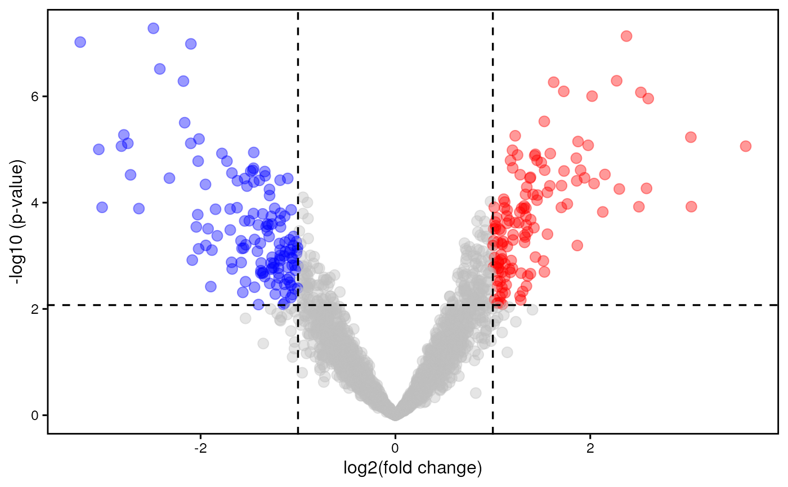

Produce volcano plots to display miRNA/gene differential expression
Source:R/visualization.R
plotVolcano.RdThis function allows the user to create publication-quality volcano plots to represent the results of miRNA/gene differential expression. In this kind of plots, the x-axis is relative to the log2 fold change between biological conditions, while the y-axis contains the negative base-10 logarithm of the p-value. Note, that even if volcano plots display unadjusted p-values on the y-axis, the cutoff level shown in this plot derive from the adjusted p-value cutoff used for differential expression analysis.
Usage
plotVolcano(
mirnaObj,
assay,
labels = NULL,
boxedLabel = TRUE,
pointSize = 3,
pointAlpha = 0.4,
interceptWidth = 0.6,
interceptColor = "black",
interceptType = "dashed",
colorScale = c("blue", "grey", "red"),
title = NULL,
fontSize = 12,
fontFamily = "",
legend = "none",
borderWidth = 1,
allBorders = TRUE,
grid = FALSE
)Arguments
- mirnaObj
A
MirnaExperimentobject containing miRNA and gene data- assay
The results to display. It must be either 'microRNA', to plot miRNA differential expression, or 'genes', to show the results for genes
- labels
The labels to show on the graph. Default is NULL not to include labels. This parameter can be a character vector containing the IDs of the features that you want to display. Alternatively, this parameter can also be the number of most significant features for which we want to plot labels
- boxedLabel
Logical, whether to show labels inside a rectangular shape (default) or just as text elements
- pointSize
The size of points in the volcano plot (default is 3)
- pointAlpha
The transparency of points in the volcano plot (default is 0.4)
- interceptWidth
The width of cutoff intercepts (default is 0.6)
- interceptColor
It must be an R color name that specifies the color of cutoff intercepts. Default is
black. Available color formats include color names, such as 'blue' and 'red', and hexadecimal colors specified as #RRGGBB- interceptType
It specifies the line type used for cutoff intercepts. It must be either 'blank', 'solid', 'dashed' (default), 'dotted', 'dotdash', 'longdash' or 'twodash'
- colorScale
It must be a character vector of length 3 containing valid R color names for downregulated, non significant, and upregulated features, respectively. Default value is
c('blue', 'grey', 'red'). Available color formats include color names, such as 'blue' and 'red', and hexadecimal colors specified as #RRGGBB- title
The title of the plot. Default is
NULLnot to include a plot title- fontSize
The base size for text elements within the plot. Default is 12
- fontFamily
The base family for text elements within the plot
- legend
The position of the legend. Allowed values are
top,bottom,right,leftandnone. The default setting isnoneso that the legend will not be included in the graph.- borderWidth
The width of plot borders (default is 1)
- allBorders
Logical, whetether to show all panel borders, or just the bottom and left borders. Default is TRUE
- grid
Logical, whether to show grid lines or not. Default is FALSE
Author
Jacopo Ronchi, jacopo.ronchi@unimib.it
Examples
# load example MirnaExperiment object
obj <- loadExamples()
# produce a volcano plot for genes
plotVolcano(obj, "genes")
